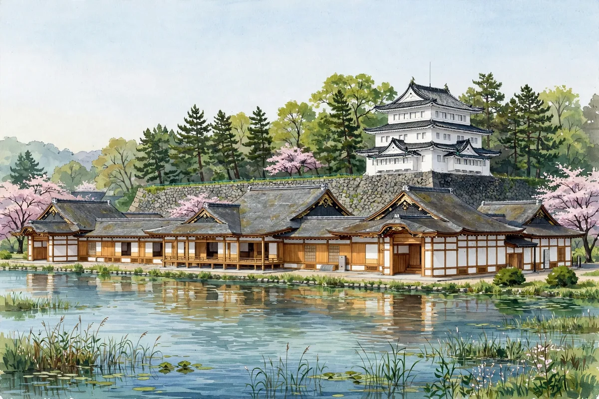

バリアフリー方針のとりまとめ、来年度へ先送り――名古屋城天守の木造復元、事業費は505億円超の見通し

城と神社にまつわる新しい動きをお伝えするニュース記事です。出典はFNNプライムオンライン（東海テレビ、2026年11月4日）と中日新聞Web（2026年11月4日）です。名古屋城天守の木造復元をめぐり、名古屋市はバリアフリー方針のとりまとめを2027年度へ先送りすると、11月4日に明らかにしました。木造復元される天守に設ける方針の「垂直昇降機」について、物理的には最上階まで設置可能とする一方、文化的観点などから何階まで設置するのが適切か、検討が続いています。
名古屋市は障害者団体などと対話を進め、来年2月には方針をまとめるとしていました。しかし検討内容が増えているなどとして、取りまとめは来年度へ先送りされることになりました。11月4日には名古屋市中区の名古屋都市センターで、障害者団体などが参加する会合が開かれ、市側が方針の先送りを説明しました。名古屋城総合事務所の渡辺孝彦所長は「木造復元とバリアフリーをどうバランスを取って両立するのか慎重に検討している。時間がかかって申し訳ない」と述べています。来年2月以降の会合で、小型昇降機の設置階を含むバリアフリーの素案を示したうえで、さらに当事者との対話を続けるということです。
バリアフリー方針がまとまらなければ、木造復元の工事の着工は難しいとされています。事業費は、当初の上限としていた505億円を上回る見通しとなっています。木造復元は、戦災で焼失した天守を、史料に基づき木造でよみがえらせる計画で、バリアフリーのあり方が長年の論点になってきました。昇降機をどこまで設けるかは、歴史的な天守の姿をどこまで再現するかという問題と重なります。
名古屋城は、徳川家康が1612年（慶長17年）に築いた城で、江戸時代には尾張徳川家の居城でした。天守は1945年（昭和20年）の空襲で焼失し、1959年（昭和34年）に鉄筋コンクリート造で再建されました。2018年（平成30年）5月に天守閣の入館が停止され、現在は木造復元に向けた取り組みが進められています。天守の金の鯱は名古屋城のシンボルとして知られています。木造復元とバリアフリーの両立という課題は、文化財の保存と活用を考えるうえでの代表的な話題です。
バリアフリー方針の素案は、来年2月以降の会合で示される予定です。木造復元の工事の着工時期や事業費の見通しは、今後の検討次第となります。名古屋城を訪れる際は、名古屋市の公式案内で最新の情報を確認してください。
天守つるぎから一言：木造でよみがえる天守と、誰もが登れる天守。どちらも大切だからこそ、時間をかけて考える――。名古屋城の決断を、これからも見守っていきたいね。
城と神社のニュースや検定の情報は、公式SNSでもお知らせしています。InstagramとThreadsの @tabi.kentei をフォローして、最新情報をチェックしてください。
同じテーマの記事：
この記事のおすすめ本

表紙イメージ（実際の表紙とは異なります）
PR 入門書
ゼロから分かる！ 図解日本の城入門
著者：小和田泰経
縄張・堀と石垣・天守のしくみまで、イラストでやさしく解説。城めぐり初心者が最初に持つ一冊として、検定の教科書と合わせて読むのにおすすめです。
Amazonで見る価格はAmazonでご確認ください／リンク先：Amazon.co.jp

表紙イメージ（実際の表紙とは異なります）
PR ガイド・スタンプ帳
日本100名城に行こう 公式スタンプ帳つき
著者：公益財団法人 日本城郭協会
日本100名城の公式ガイドブック。1城1ページで見どころを解説し、巻末がそのまま公式スタンプ帳になります。スタンプラリーを始めるならまずこの一冊。
Amazonで見る価格はAmazonでご確認ください／リンク先：Amazon.co.jp

表紙イメージ（実際の表紙とは異なります）
PR ガイド・スタンプ帳
日本100名城と続日本100名城に行こう 公式スタンプ帳つき
著者：公益財団法人 日本城郭協会
100名城と続100名城、あわせて200城を一冊に収録した合本版。すでに100名城を巡り始めた人が、続編までまとめて持ち歩きたいときに便利です。
Amazonで見る価格はAmazonでご確認ください／リンク先：Amazon.co.jp
当サイトは、Amazon.co.jpを宣伝しリンクすることによってサイトが紹介料を獲得できる手段を提供することを目的に設定されたアフィリエイトプログラムである、Amazonアソシエイト・プログラムの参加者です。価格・在庫はリンク先でご確認ください。